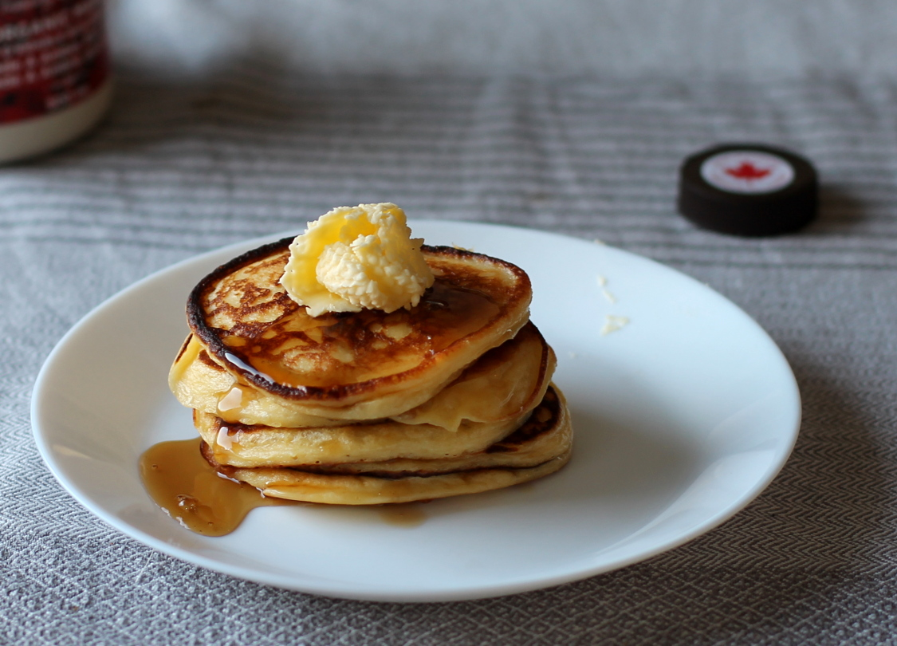

Pancakes – Greek Yoghurt American Pancakes
These American pancakes are not too sweet, and filling enough with the greek yoghurt.
metadata
Created on 2018-04-24
Estimated time needed: At least 18 minutes. At most 18 minutes.
Ingredients
| 300 | g | greek yoghurt | ||
| 100 | g | flour | ||
| 22 | g | milk | ||
| 12 | g | baking powder | 4 g of baking powder is about 1 tsp | |
| 10 | g | honey | ||
| 5.7 | g | salt | 5.7 g of salt is about 1 tsp | |
| 5 | g | lemon juice | optional, 5g lemon juice is about 1 tsp | |
| 2.6 | g | vanilla sugar | 2.6 g of vanilla sugar is about 1 tsp | |
| 2 | eggs | |||
| coconut oil | or any other oil or butter |
Scaling
Timeline
Directions
⌛ Active time 1 minutes
- 300 g greek yoghurt
- 100 g flour
- 5.7 g salt | 5.7 g of salt is about 1 tsp
- 12 g baking powder | 4 g of baking powder is about 1 tsp
- 2.6 g vanilla sugar | 2.6 g of vanilla sugar is about 1 tsp
- 10 g honey
Mix together:
Mix together the first 6 ingredients to a smooth batter.
⌛ Active time 1 minutes
- 2 eggs
Add eggs:
Add egg to the batter, and mix until smooth.
⌛ Active time 1 minutes
- 5 g lemon juice | optional, 5g lemon juice is about 1 tsp
- 22 g milk
Add lemon juice and milk:
Mix the lemon juice and milk into the batter.
⌛ Active time 15 minutes
- coconut oil | or any other oil or butter
Fry in oil in pan:
Add a little oil to a frying pan. Add about one tbsp of batter per pancake to the pan, and fry on medium heat. Flip the pancakes when they are golden brown underneath.